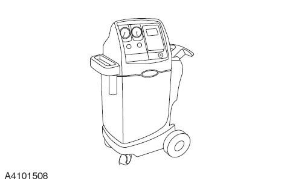

Метод рекуперации и заправки хладагента
Стандартные инструменты и ремонтное оборудование: установка для рекуперации и заправки хладагента, позволяющая выполнить процедуры слива, вакуумирования и повторной заправки системы кондиционирования за одно подключение. Во время рекуперации и вакуумирования хладагент фильтруется для обеспечения чистоты и сухости хладагента, заливаемого в систему кондиционирования.

-
Работы с хладагентом следует выполнять в хорошо вентилируемом помещении, не вдыхайте пары хладагента. Следует избегать вдыхания хладагента кондиционера R-134a (тетрафтораэтан ), а также паров или тумана компрессорного масла. Контакт с ними вызывает раздражение глаз, носа и горла. Работы следует проводить в хорошо вентилируемой зоне. При удалении R-134a из системы кондиционирования следует использовать сертифицированное ремонтное оборудование (регенерационное оборудование R-134a), отвечающее требованиям SAE (Американское общество инженеров-автомобилестроителей ) J 2210. Если произошел случайный выброс системы, перед продолжением ремонта необходимо проветрить рабочую зону. Другую информацию о здоровье и безопасности можно получить у производителей хладагента и масла. Выключить все потребители электроэнергии, выключить переключатель пуска.
-
Отсоединить жгут проводов отрицательной клеммы Аккумуляторная батарея.
-
Подключить питание оборудования.
-
Подсоединить линии высокого и низкого давления контура охлаждения.
-
Открыть клапан низкого давления ① и клапан высокого давления ② на оборудовании.
-
Выбрать пункт "Рекуперация хладагента" на оборудовании, запустить оборудование и начать процесс рекуперации.
-
Проверить значение давления по манометру низкого давления оборудования; когда манометр достигнет вакуума -34 kPa, выключить оборудование и остановить рекуперацию.
Вакуумирование системы кондиционирования
-
Подсоединить линии высокого и низкого давления контура охлаждения.
-
Открыть клапан высокого давления ② оборудования, выбрать пункт "Вакуумирование", задать время 15 минут. Запустить вакуумирование оборудования, по достижении заданного времени оборудование автоматически прекратит работу.
-
Закрыть клапан высокого давления ②, проверить значение давления по манометру низкого давления.
-
Если значение давления достигло заданного значения и не поднимается снова, подтвердить отсутствие утечек в контуре охлаждения и приступить к добавлению компрессорного масла и хладагента.
-
Если давление растет, проверить контур охлаждения на наличие утечек.

Заправьте хладагент в соответствии со следующими стандартами
|
Модель хладагента |
Заправочный объем хладагента |
|
R134a |
Модель с запасом хода 405 KM — 780 ± 20 g; модель с запасом хода 505 KM — 450 ± 20 g |
-
Заправка хладагента должна выполняться после дозаправки компрессорного масла кондиционера. Подсоединить линии высокого и низкого давления контура охлаждения
-
Выбрать пункт "Дозаправка хладагента" на оборудовании, отрегулировать заправочный объем.
-
Открыть клапан низкого давления, запустить оборудование для заправки.
-
Наблюдать за дисплеем оборудования: когда объем заправки достигнет заданного значения, на экране отобразится завершение заправки.
-
Закрыть клапаны.
-
Если на оборудовании отображается слишком низкая скорость заправки, воспользуйтесь следующим способом заправки:
-
Отсоединить штуцер высокого давления контура охлаждения, подключив только сторону низкого давления.
-
Закрыть клапаны высокого и низкого давления оборудования.
-
Установить селектор в положение парковки, запустить автомобиль, включить кондиционер, установив режим низкой температуры.
-
Открыть клапан низкого давления оборудования, хладагент будет поступать в тормозную магистраль со стороны низкого давления.
-
Наблюдать за дисплеем оборудования: когда объем заправки достигнет заданного значения, отсоединить штуцер со стороны низкого давления.
-
Заправка хладагента завершена.
-